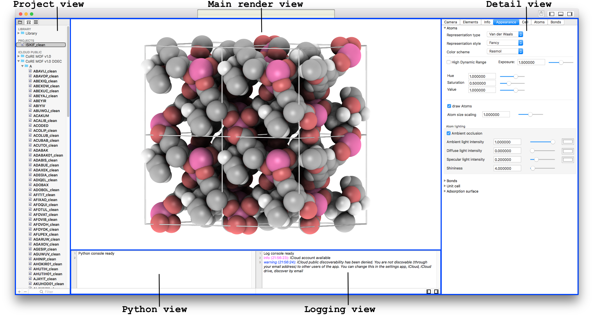

The main window is your primary interface for viewing, editing, and managing all the parts of your projects. It uses a master-detail interface, where changes in the primary view controller (the master project-view) drive changes in a other views.

Figure: The main windows (left) the project manager, (middle/right) the detail-panel, also consisting of a master (the render-view) and the detail-inspectors on the right.